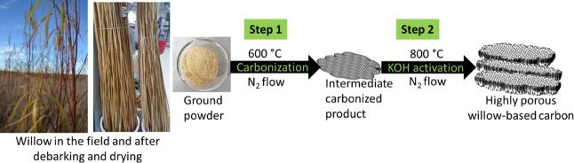
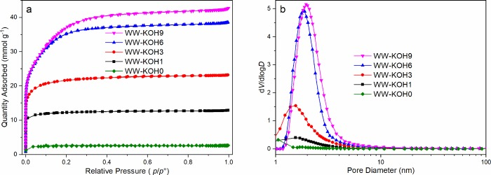
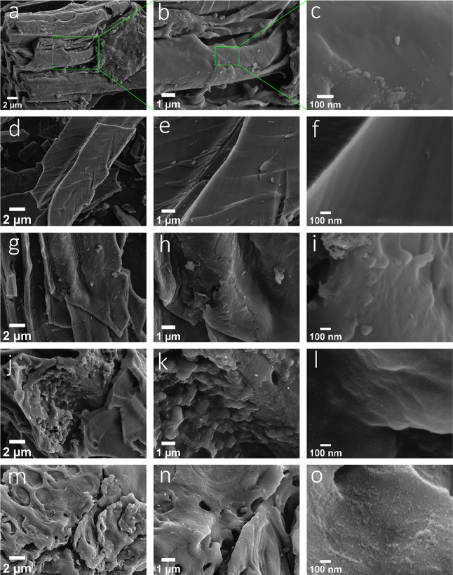
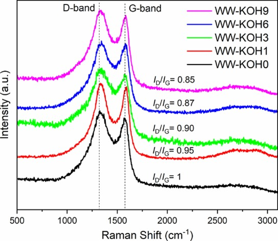
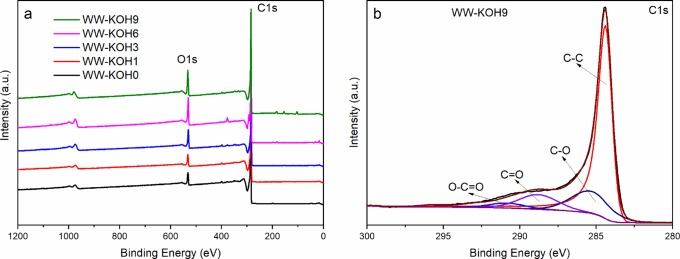
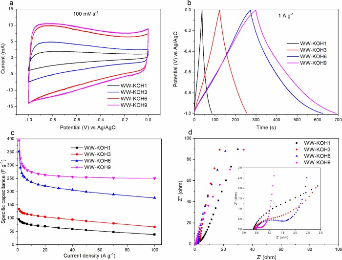
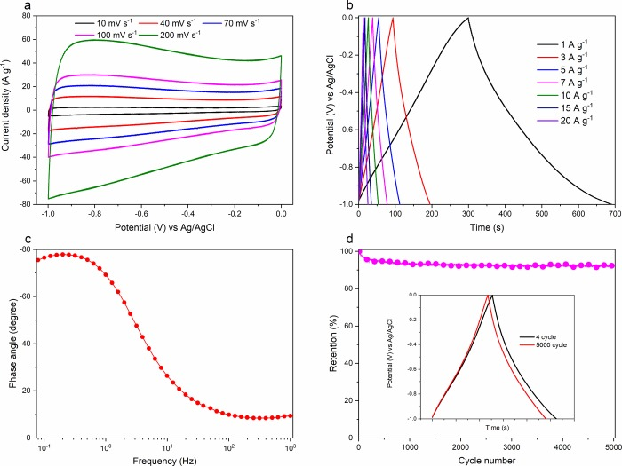
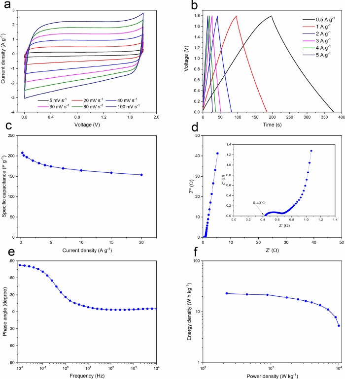

Highly Porous Willow Wood-Derived Activated Carbon for High-Performance Supercapacitor Electrodes
本地阅读版：出版社提交的完整 XML 正文与原图。排版由本项目生成；原始 XML 为证据。不是出版社 PDF。
DOI: 10.1021/acsomega.9b01977
Abstract
In this study, we present willow wood as a new low-cost, renewable, and sustainable biomass source for the production of a highly porous activated carbon for application in energy storage devices. The obtained activated carbon showed favorable features required for excellent electrochemical performance such as high surface area (∼2 800 m2 g–1) and pore volume (1.45 cm3 g–1), with coexistence of micropores and mesopores. This carbon material was tested as an electrode for supercapacitor application and showed a high specific capacitance of 394 F g–1 at a current density of 1 A g–1 and good cycling stability, retaining ∼94% capacitance after 5 000 cycles (at a current density of 5 A g–1) in 6 M KOH electrolyte. The prepared carbon material also showed an excellent rate performance in a symmetrical two-electrode full cell configuration using 1 M Na2SO4 electrolyte, in a high working voltage of 1.8 V. The maximum energy density and power density of the fabricated symmetric cell reach 23 W h kg–1 and 10 000 W kg–1, respectively. These results demonstrate that willow wood can serve as a low-cost carbon feedstock for production of high-performance electrode material for supercapacitors.
Introduction
P0001
Energy storage devices such as batteries and supercapacitors play a significant role in the development of renewable and sustainable energy sources such as solar, geothermal, and wind energy.1 Furthermore, due to the ever-growing market for various portable electronic devices, which have become more and more power-hungry, the dire need to develop high-performance and efficient new energy storage sources is critical.2 Supercapacitors or electric double-layer capacitors have become popular as energy storage devices in a variety of high power output applications due to their rapid charge–discharge rate, long cycle life, and high power density.3−5 In addition, supercapacitors can complement batteries to achieve high power output in a very short time.1
P0002
Carbon-based materials, especially those derived from activated carbon (AC), are widely used as electrode materials in most commercial supercapacitors due to their relatively low cost, high surface area, and excellent chemical and thermal stabilities.6 The electrochemical performance of ACs in supercapacitors is greatly dependent on the carbon source and fabrication method. The desired properties of porosity, electrical conductivity, particle size, and so forth are achievable by choosing carefully the right carbon source and by selecting the optimum conditions during the synthesis of ACs used for the electrode material. Most of the available commercial ACs are typically produced from fossil fuel-based precursors, such as coal, polymers, and pitch, which make them expensive and ecologically unfriendly.7,8 Therefore, there is a desirable need to find and utilize new renewable and sustainable sources for AC synthesis designed for supercapacitor electrode applications. Graphene and carbon nanotubes are frequent choices as electrode materials in supercapacitors.2,9−13 However, due to commonly high production costs and structurally limited surface area caused by nanoparticle aggregation, their adoption for large-scale commercialization has largely been hindered.11,14,15
P0003
In recent years, research interests have been focused on the search for and development of biomass-derived green carbon electrode materials.16,17 Many researchers have already reported the use of various biomass sources such as rice husk,18,19 cassava peel waste,20 peanut shells,18 coffee beans,21 bacterial cellulose,22,23 paper pulp mill sludge biowaste,24 chicken eggshells,25 and so forth as carbon sources for electrode materials. Compared to traditional fossil-based carbon sources, biomass is sustainable, structurally porous, abundant, renewable, and low-cost.7,17 Besides, the majority of biomass sources are usually rich in heteroatoms such as N, S, P, and O. These heteroatom-enriched resources can be used to synthesize heteroatom-doped ACs, additionally providing pseudocapacitance, which can result in substantially increased overall capacitance.26 Thus, biomass is considered an excellent green source for the fabrication of high-performance and efficient supercapacitor electrodes, which are largely based on renewable and sustainable materials. Therefore, there is still need to find and explore newer sources that are not only low-cost and sustainable but can easily be controlled structurally and optimized during the synthesis process. One of the disadvantages of various biomass sources is that they have different structures, and therefore, the optimum conditions used to synthesize ACs from one source cannot necessarily be transferrable to synthesis from another. Besides, even the same type of source used at different times still requires different synthesis conditions due to the changing structure. Therefore, for practical applications, especially at large-scale, it is also vital to utilize raw biomass sources with easily predictable and constant structure.
P0004
In this regard, we propose willow wood (WW) as a novel source for the synthesis of high-performance carbon electrodes for supercapacitors. Willow (Salix sp.), belongs to the family of deciduous trees, grows as short rotation coppice,27 and has been investigated mainly as an energy crop for liquid fuel, heat, and power generation.28 The advantages of utilizing willow as a feedstock include rapid growth, resulting in high biomass yields, ability to grow on marginal land areas, and genetic diversity with potential for traditional breeding and hybridization.27−29 Due to its diverse properties, willow has also been utilized in water purification30 and as a high-yield source of lignocellulosic sugars and green aromatics,31 as well as for its traditional applications providing flexible stems in basket and wicker production.32 The highly valued bark from willow can be utilized as fiber bundles33 and extracts.34 To the best of our knowledge, WW as a whole has not been investigated earlier in electrode fabrication for supercapacitors. Some previous studies, though, have demonstrated the use of different parts of willow such as willow leaves35 and catkins.36 However, this study demonstrates the possibility of using WW as a whole as an alternative green source for electrode fabrication for high-performance supercapacitors.
Results and Discussion
P0005
As shown in Figure 1, a two-step procedure is employed for the synthesis of the ACs. The first precarbonization step is responsible for converting WW into carbon. The yield was calculated to be around 25%. Chemical activation with KOH of the precarbonized samples is necessary to generate more micropores and mesopores. Several steps are considered to be involved during the chemical activation with KOH. The K-containing species, that is, KOH, K2CO3, and K2O, are responsible for etching away the carbon matrix via redox reactions that produce abundant micropores and mesopores. Furthermore, when the gaseous H2O and CO2 are mixed, they contribute to the gasification of carbon and further help develop the high porosity. Finally, the metallic potassium intercalates into the carbon network, which results in the expansion of carbon structural lattices. After washing off the intercalated metallic potassium, microporosity is further enhanced.37,38 The yield after precarbonization was dependent on the amount of KOH. The yields for the WW-KOH0, WW-KOH1, WW-KOH3, WW-KOH6, and WW-KOH9 were 78, 70, 63, 60, and 57%, respectively.
P0006
Schematic diagram showing the simple process for the synthesis of highly porous willow-derived ACs.
P0008
The pore structure properties of the activated carbon samples were revealed using the nitrogen sorption. Figure 2 shows the nitrogen adsorption–desorption isotherms and pore size distribution curves of the samples activated with different ratios of KOH/C. All samples exhibit a type I isotherm according to the International Union of Pure and Applied Chemistry. A steep increase of adsorbed N2 at relatively low pressure indicates the presence of a large amount of micropores. On raising the pressure, a gradual increase in adsorption is observed until a plateau is reached, indicating the presence of mesopores.39 The amount of nitrogen uptake increases with an increase in the KOH/C ratio from 1 to 9, which corresponds to a higher surface area and pore volume. However, the increase becomes minimal at KOH/C ratios of 6 and higher. It is also important to note that the development of mesoporosity occurs at higher KOH concentrations. For samples WW-KOH1 and WW-KOH3, micropores occupy about 75%, while mesopores occupy less than 1%. At higher KOH concentrations, however, the micropores for WW-KOH6 and WW-KOH9 occupy about 66 and 57%, and mesopores occupy 33 and 42%, respectively. Further surface area and porosity characteristics are shown in Table 1. The average pore diameter also increases with an increase in the KOH/C ratio. This may be attributed to the expansion of the carbon lattice caused by intercalation of potassium.37 Ion-transport kinetics in electrodes play a significant role in the performance of supercapacitors. The ion-transport kinetics is affected by the surface area and pore structure of the electrode. The combination of both micropores and mesopores, together with a high specific surface area, is expected to have a significant effect on the electrochemical performance. The mesopores could serve as a transport route for fast electrolyte supply, while the micropores could provide a high surface area for fast ion adsorption, which could lead to high capacitance.40 It should be pointed out that the high surface area and pore volume in the studied WW hybrid (2 800 m2 g–1 and 1.45 cm3 g–1) are higher than those reported for willow leaves (1 093 m2 g–1 and 0.83 cm3 g–1)35 and willow catkins (1 775 m2 g–1 and 0.85 cm3 g–1).36 As we see from Table 1, increasing the KOH/C ratio beyond 6 does not lead to any observable change in material properties. Given the practical limits of KOH level in real-life applications, this can be seen as an advantage as further seeking to optimize at higher KOH levels is unlikely to improve the performance. Therefore, other methods of optimization are recommended such as temperature control, hydrothermal pretreatment, and so forth, which can be an avenue for future research.
P0009
(a) N2 adsorption–desorption isotherms and (b) pore size distribution.
P0011
Specific Surface Area and Pore Volume of the Prepared WW Samples at Different KOH/C Ratios
The morphology and microstructures were examined by SEM. Figure 3 shows the SEM images of all samples prepared at the various ratios of KOH/C. At low magnifications, all samples seem to have a similar microstructure. However, it is clear that, with an increase in the KOH/C ratio a highly microporous structure can be visualized at higher magnifications. At a KOH/C ratio of 9, for example, it is visibly clear that the surface is covered with small-sized micropores. The results are consistent with that of nitrogen sorption. Further SEM images of the samples are shown in the Supporting Information, Figure S1.
P0014
SEM images showing the morphology of the prepared samples at different resolutions: (a–c) WW-KOH0; (d–f) WW-KOH1; (g–i) WW-KOH3; (j–l) WW-KOH6; and (m–o) WW-KOH9.
P0016
Raman spectroscopy reveals two distinct bands at ∼1 350 and ∼1 590 cm–1 (Figure 4) corresponding to the D-band and G-band, respectively. The D-band represents the defects and disorder in the carbon structures, while the G-band is due to the in-plane vibrations of ordered sp2-bonded carbon atoms. The intensity ratio of the D-band and G-band (ID/IG) is used to estimate the quantity of defects and degree of graphitization of the samples.41 The amount of KOH used in the activation process does not seem to have a detrimental effect on the degree of structural order in the carbonized materials, shown by a similar ID/IG ratio throughout. However, a slight decrease in the ID/IG ratio is observed as the amount of KOH increases, indicating that the degree of graphitization slightly improves at a higher amount of KOH.
P0017
Raman spectra of the prepared samples showing the correlation with the ID/IG ratio.
P0019
X-ray photoemission spectroscopy (XPS), in turn, reveals the species and chemical states on the surface of the activated carbon samples, as shown in Figure 5. The broad spectra for all samples (Figure 5a) show the presence of two distinct peaks at around 285 and 531 eV, corresponding to carbon and oxygen, respectively. Figure 5b shows the high-resolution C 1s of the WW-KOH9 sample deconvoluted into four peaks, located, respectively, at 284.4 (C=C), 285.4, (C–O), 288.8 (C=O), and 290.8 eV (O=C–O).42 The high-resolution C 1s data for the remaining samples can be found in the Supporting Information, Figure S2. The resulting elemental concentrations of carbon and oxygen in the samples are summarized in Table 2. The more detailed results of XPS showing the functional groups can be seen in Table S1. A slight decrease in carbon content and corresponding increase in oxygen are observed when the amount of KOH increased. The higher oxygen content is expected to improve the wettability of the carbon samples and lead to an efficient penetration of electrolyte into the pores of the electrode, which, in turn, should translate to higher capacitance. Moreover, the presence of heteroatoms could also contribute to an increased overall capacitance by means of pseudocapacitance.
P0020
XPS: (a) broad scan spectra of all samples and (b) C 1s for WW-KOH9.
P0022
Results of XPS Analysis Revealing the Surface Characteristics of the Prepared Samples
The electrochemical performance of all prepared carbon samples was analyzed in a three-electrode configuration system in 6 M KOH electrolyte. Figure 6 shows the electrochemical survey conducted for all samples, evaluated with CV, GCD, and EIS methods. CV curves representing measurements at a sweep rate of 100 mV s–1 for all samples are depicted in Figure 6a. The typical rectangular CV curves are found especially for samples with higher KOH/C ratio, indicating an excellent reversible capacitive behavior. It is also important to note that the enclosed CV areas are increasing in proportion to the amount of KOH and retain a more pronounced rectangular shape and, thus, a greater specific capacitance. This is not surprising, considering that the highest surface area and pore volume were achieved with samples activated at higher KOH/C ratios.
P0025
Electrochemical performance of the prepared samples in a three-electrode configuration. (a) Cyclic voltammetry at scan rate of 100 mV s–1. (b) Galvanostatic charge–discharge cycle at a current density of 1 A g–1. (c) Specific capacitance as a function of current density. (d) Nyquist plot of the imaginary and real parts of impedance with the inset showing the high-frequency region.
P0027
The GCD curves at a current density of 1 A g–1 are shown in Figure 6b. Samples WW-KOH1 and WW-KOH2 show a rather symmetrical triangular form, while WW-KOH6 and WW-KOH9 show a quasi-symmetrical shape. This effect is caused by heteroatom doping, that is, oxygen, in this case. XPS analysis showed that the amount of oxygen was highest at the higher KOH/C ratios of 6 and 9. The oxygen-containing functional groups provide pseudocapacitance, which contributes additionally to the total capacitance and can cause the GCD curves, especially at low current density, to deviate from the symmetrical triangular shape. It has been shown that pseudocapacitance from oxygen functional groups is caused by a quinone/hydroquinone redox pair.43 A similar phenomenon was also reported for nitrogen-doped activated carbon.44 The GCD curves show that samples WW-KOH6 and WW-KOH9 have the longest charge and discharge cycles, which implies best electrochemical performance in comparison to the other samples. This finding was further supported by calculating the specific capacitance at various current densities for all samples, as shown in Figure 6c. The gravimetric capacitance (Cg) from the charge–discharge cycles for the three-electrode system was calculated using eq 1.1where I (A) is the discharge current, Δt (s) is the discharge time, ΔV (V) voltage difference, and m (g) is the mass of the active material.The specific capacitance of WW-KOH9 and WW-KOH6 is significantly higher than the rest of the samples at all current densities. For example, the specific capacitances at a current density of 1 A g–1 for WW-KOH1, WW-KOH2, WW-KOH6, and WW-KOH9 are 95, 133, 352, and 392 F g–1, respectively.
P0028
Figure 6d shows the Nyquist plot obtained from EIS in the frequency range of 0.01 Hz–1 MHz with the inset showing the magnification of the high-frequency region. The vertical line in the low-frequency region is more closely parallel to the Z″ axis for WW-KOH6 and WW-KOH9, which indicates that a nearly perfect capacitive behavior is obtained. On the other hand, the vertical lines are sloping away from the y axis for samples WW-KOH1 and WW-KOH2, indicating a poor capacitive behavior due to the low pore volume and surface area. The intercept of the Nyquist plot with the x axis is normally used to estimate the equivalent series resistance (ESR),45 which is the combination of the interfacial resistance of the electrode material and ionic resistance of electrolyte. The intermediate- to high-frequency region represents the charge transfer resistance. All samples recorded very low ESR values in the range of 0.36–0.46 Ω. The diameter of the semicircle in the middle-frequency region indicates the sum of bulk electrolyte resistance and charge transfer resistance. By comparing the shapes in Figure 6d (inset), it is clear that WW-KOH9 has the smallest semicircle indicating the lowest charge transfer resistance. A straight line at a slope of about 45° in the low-frequency region follows the Warburg response, which is due to ion transport and diffusion resistance inside the intraparticle pores of the electrode.46 Again, WW-KOH9 displays a smaller Warburg region in comparison to other samples indicating a more efficient ion diffusion process caused by high surface area and a well-developed pore structure consisting of micropores and mesopores.
P0029
It is clear that WW-KOH9 and WW-KOH6 outperform all other samples based on all the conducted analyses. However, WW-KOH9 just slightly performs better than WW-KOH6, and therefore, the following tests focus on WW-KOH9. The CV curves are shown in Figure 7a at various sweep rates. The CV profiles retain a rectangular shape at all sweep rates from 10 to 200 mV s–1, demonstrating an excellent capacitive behavior with a high reversible adsorption and desorption rate of electrolyte ions onto the electrode. Moreover, the absence of oxidation and reduction peaks indicates the dominance of an electrical double-layer capacitance. The GCD curves at current densities ranging from 1 to 20 A g–1 are shown in Figure 7b. The nearly linear and symmetrical curves at all current densities indicate an excellent electrical double-layer behavior and a high Coulombic efficiency. Even at an ultrahigh current density of 100 A g–1, WW-KOH9 still shows a high capacitance of 250 F g–1, indicating an excellent rate capability (Figure 6c). The dependence of the phase angle on the frequency is shown in Figure 7c. The characteristic frequency f0 for a phase angle of −45° corresponds to the time constant of 0.28 s (τ0 = 1/f0). This frequency represents the point at which the resistive and capacitive impedance components are equal, and, at frequencies higher than f0, the supercapacitor transitions to a more resistive behavior.47 This low time constant shows a high rate capability of the prepared electrode material. The cycling test shown in Figure 7d illustrates that the electrode is able to retain ∼94% of the initial capacitance after 5 000 cycles at a high current density of 5 A g–1, showing an excellent cycling stability.
P0030
Electrochemical properties of WW-KOH9 in a three-electrode configuration system. (a) CV plots recorded at different scan rates. (b) Galvanostatic charge–discharge cycle at different current densities. (c) Bode plot of phase angle against frequency. (d) Cycling stability at a current density of 5 A g–1 and inset showing charge–discharge curves at the start and end of cycles.
P0032
To demonstrate its electrochemical performance further, WW-KOH9 was tested in a symmetrical two-electrode supercapacitor system with a glass fiber separator and 1 M Na2SO4 electrolyte. Figure 8a exhibits the CV curves of the constructed WW-KOH9-based supercapacitor operated at various scan rates in a potential range of 0 and 1.8 V. It can be seen that, at all scan rates, near ideal rectangular curves can be obtained without any obvious distortions or redox peaks, indicating that the electrochemical performance of WW-KOH9 is largely dominated by the electrical double-layer capacitance. Furthermore, the GCD curves in Figure 8b at different current densities display linear and symmetrical triangular shapes, indicating excellent electrochemical double-layer behavior. The specific capacitances calculated from the GCD curves at various current densities are shown in Figure 8c. The specific capacitance decreases from 201 to 154 F g–1 as the current density increases from 0.5 to 20 A g–1, respectively, equivalent to a 77% retention, which indicates a very high rate capability. These results are superior to many representative carbon-based supercapacitors tested in the Na2SO4 electrolyte.44,48−50 Even at a very high current density of 20 A g–1, WW-KOH9 still shows a very high specific capacitance of 154 F g–1, again indicating the excellent rate performance. The Nyquist plot from the EIS is shown in Figure 8d, with the inset showing the magnification of the high-frequency region. A nearly vertical line in the low-frequency region is observed, confirming an ideal capacitive behavior of electrochemical double-layer capacitor due to high pore volume and advantageous pore size distribution. Moreover, a very low ESR value of 0.4 Ω is found, indicating good electron conduction and fast ion exchange between the electrode and electrolyte. Furthermore, the dependence of the phase angle on the frequency is presented in Figure 8e. At low frequency, the phase angle is −82.4°, which is close to that of an ideal capacitor of −90°. Energy density is directly proportional to the square of the operational potential. Therefore, we see that using Na2SO4 aqueous electrolyte with a maximum working potential of 1.8 V increases sharply the energy density compared with the KOH electrolyte, which has 1 V working potential.
P0033
Electrochemical performance of WW-KOH9 in 1 M Na2SO4 using a symmetrical two-electrode configuration. (a) CV curves at various scan rates. (b) GCD curves at various charge densities. (c) Specific capacitance as a function of charge density. (d) Nyquist plot with inset showing the high-frequency region. (e) Impedance phase angle as a function of frequency. (f) Ragone plot.
P0035
The energy density E (W h kg–1) and power density P (W kg–1) are calculated from specific capacitance using eqs 2 and 3, respectively.23where Cg is the specific capacitance (F g–1), V is the cell potential (V), and Δt is the discharge time (s). The Ragone plot in Figure 8f shows that the WW-KOH9 electrode supercapacitor produces a high energy density of ∼23 W h kg–1 at a power density of ∼223 W kg–1, which is higher than most of the previously reported carbon-based symmetric supercapacitors in aqueous electrolytes.50,51
P0036
The superior electrochemical performance of the WW-KOH9 electrode can be attributed to the synergy of the high specific surface area and the optimal combination of micropores and mesopores. Moreover, the presence of oxygen also contributes to the overall capacitance and improves the wettability of the electrode by the electrolyte. The high content of micropores in WW-KOH9 plays a significant role in optimizing the electrical double-layer surfaces and in increasing the specific capacitance in an aqueous electrolyte for maximum adsorption of ions, and the mesopores provide an enrichment of interconnected channels with the micropores, which facilitates a rapid electrolyte transfer and penetration into the micropores of the electrode.52
Experimental Part
Materials and Preparation
P0037
Poly(vinylidene fluoride) (PVDF), N-methyl-2-pyrrolidone (NMP), potassium hydroxide (KOH), and sodium sulphate (Na2SO4) were purchased from Sigma-Aldrich. Carbon black Super P was purchased from Nanografi. The WW used in this study was a one-year-old willow hybrid “Klara” harvested from the plantation of Carbons Finland Oy that is located in Kouvola, a city in southern Finland, on May 18, 2017. The willow was debarked immediately after harvesting. The dried debarked WW was ground into powder before carbonization using a Wiley mill. A two-step carbonization process was employed. The schematic preparation of the activated carbons is shown in Figure 1. The WW was first precarbonized at 600 °C for 1 h at a heating rate of 5 °C min–1 under nitrogen flow. After carbonization, the samples were washed with deionized water and dried at 105 °C. Then, KOH was dissolved in about 20 mL of water and thoroughly mixed with the dried precarbonized carbon in various KOH/C mass ratios of 0, 1, 3, 6, and 9. The mixed samples were then dried at 105 °C until completely dry followed by activation at 800 °C for 1 h at a heating rate of 5 °C min–1 under nitrogen flow and allowed to cool down to room temperature naturally. After carbonization, the samples were thoroughly washed with 1 M hydrochloric acid and subsequently with deionized water until neutral pH. The powders were finally dried at 105 °C before further analysis. The resulting activated carbon samples are designated as WW-KOH0, WW-KOH1, WW-KOH3, WW-KOH6, and WW-KOH9, with the numeration corresponding to the KOH/C ratios.
Materials Characterization
P0038
Scanning electron microscopy (SEM) was used to analyze the structure and morphology of the carbon powders using a Zeiss Sigma VP at 5 kV acceleration voltage. The samples were sputtered with platinum to form a conducting film prior to SEM measurements. Raman spectra were collected using a WITec alpha300 R Raman microscope (alpha 300, WITec, Ulm, Germany) equipped with a piezoelectric scanner employing a 532 nm linear polarized excitation laser. The Raman spectral analysis was performed directly on the prepared carbon powders. Surface area and pore volume were determined using a Micromeritics Tristar II apparatus based on the BET gas sorption method. X-ray photoelectron spectroscopy (XPS) was conducted using a Kratos Axis Ultra ESCA system with a monochromatic Al-Kα source.
Electrochemical Measurements
P0039
The electrochemical properties were studied using both the conventional two- and three-electrode systems. In the three-electrode system, the active carbon material was placed as the working electrode, and a Pt wire and Ag/AgCl electrode were used as the counter and reference electrodes, respectively. The working electrodes were prepared by mixing 80 wt % as-prepared carbon materials with 10 wt % conductive carbon black Super P and 10 wt % PVDF dissolved in NMP. The working electrode was prepared by coating the slurry on nickel foam, dried at 105 °C, and pressed before the electrochemical measurements in 6 M KOH aqueous electrolyte. The mass loading of the active electrode was in the range of 15–20 g m–2. All the electrochemical tests were carried out at room temperature. Galvanostatic charge–discharge (GCD), cycling tests, cyclic voltammetry (CV), and electrochemical impedance spectroscopy (EIS) measurements were carried out in a Gamry Reference 600+ potentiostat/galvanostat/ZRA. For the two-electrode system, two symmetrical electrodes, each measuring 15 × 15 mm2, were prepared the same way as described above with a glass fiber separator in between the two electrodes, which was previously soaked in 1 M Na2SO4 electrolyte.
Conclusions
P0040
In this work, willow wood was successfully applied as a carbonaceous biomass feedstock for the synthesis of high surface area and pore volume activated carbon for application in electrode materials for supercapacitors. The obtained activated carbon has a high surface area of up to 2793 m2 g–1 and pore volume of up to ∼1.45 cm3 g–1, with a unique combination of micropores and mesopores. This carbon material showed an excellent electrochemical performance. It showed a specific capacitance of 395 F g–1 at a current density of 1 A g–1 in 6 M KOH electrolyte, and, even at an ultrahigh current density of 100 A g–1, a high specific capacitance of 250 F g–1 is still retained, indicating an excellent rate performance. Even in the full cell two-electrode configuration, the obtained activated carbon showed excellent electrochemical performance. The specific capacitance at 1 A g–1 was 197 F g–1, dropping to 154 F g–1 at a current density of 20 A g–1 in 1 M Na2SO4 electrolyte. Furthermore, this supercapacitor with an aqueous electrolyte yielded a maximum energy density of 23 W h kg–1 and a maximum power density of 10 000 W kg–1. These results demonstrate that willow wood has high potential for application as electrode in supercapacitors. The simplicity of the synthesis procedure also demonstrates the possibility for large-scale production. This study also indicates that willow wood is a promising material from which with further development and improvement, the performance of carbon-based derivatives can be competitive with the already known industrial technological standards.
原文图表（含文末 floats-group）

Figure 1Schematic diagram showing the simple process for the synthesis of highly porous willow-derived ACs.

Figure 2(a) N2 adsorption–desorption isotherms and (b) pore size distribution.

Figure 3SEM images showing the morphology of the prepared samples at different resolutions: (a–c) WW-KOH0; (d–f) WW-KOH1; (g–i) WW-KOH3; (j–l) WW-KOH6; and (m–o) WW-KOH9.

Figure 4Raman spectra of the prepared samples showing the correlation with the ID/IG ratio.

Figure 5XPS: (a) broad scan spectra of all samples and (b) C 1s for WW-KOH9.

Figure 6Electrochemical performance of the prepared samples in a three-electrode configuration. (a) Cyclic voltammetry at scan rate of 100 mV s–1. (b) Galvanostatic charge–discharge cycle at a current density of 1 A g–1. (c) Specific capacitance as a function of current density. (d) Nyquist plot of the imaginary and real parts of impedance with the inset showing the high-frequency region.

Figure 7Electrochemical properties of WW-KOH9 in a three-electrode configuration system. (a) CV plots recorded at different scan rates. (b) Galvanostatic charge–discharge cycle at different current densities. (c) Bode plot of phase angle against frequency. (d) Cycling stability at a current density of 5 A g–1 and inset showing charge–discharge curves at the start and end of cycles.

Figure 8Electrochemical performance of WW-KOH9 in 1 M Na2SO4 using a symmetrical two-electrode configuration. (a) CV curves at various scan rates. (b) GCD curves at various charge densities. (c) Specific capacitance as a function of charge density. (d) Nyquist plot with inset showing the high-frequency region. (e) Impedance phase angle as a function of frequency. (f) Ragone plot.
Specific Surface Area and Pore Volume of the Prepared WW Samples at Different KOH/C Ratios
samples
SBET (m2 g–1)
Smicro (m2 g–1)
Vtotal (cm3 g–1)
Vmicro (cm3 g–1)
Vmeso (cm3 g–1)
average pore size (nm)
WW-KOH0
171
137
0.081
-
-
1.26
WW-KOH1
899
707
0.213
0.159
0.001
1.43
WW-KOH3
1 591
946
0.576
0.434
0.003
1.58
WW-KOH6
2 596
2 004
1.254
0.825
0.419
1.90
WW-KOH9
2 793
1 920
1.446
0.830
0.602
2.08
Results of XPS Analysis Revealing the Surface Characteristics of the Prepared Samples
atomic concentration (atom %)
samples
C
O
C/O
WW-KOH0
93.15
5.15
18.09
WW-KOH1
93.38
5.58
16.74
WW-KOH3
88.57
8.87
10.00
WW-KOH6
82.42
12.40
6.65
WW-KOH9
85.50
11.27
7.59
References
ReferencesSimonP.; GogotsiY. Materials for electrochemical capacitors. Nat. Mater. 2008, 7, 845–854. 10.1038/nmat2297.18956000XuC.; XuB.; GuY.; XiongZ.; SunJ.; ZhaoX. S. Graphene-based electrodes for electrochemical energy storage. Energy Environ. Sci. 2013, 6, 1388–1414. 10.1039/c3ee23870a.ZhangL. L.; ZhaoX. S. Carbon-based materials as supercapacitor electrodes. Chem. Soc. Rev. 2009, 38, 2520–2531. 10.1039/b813846j.19690733WangG.; ZhangL.; ZhangJ. A review of electrode materials for electrochemical supercapacitors. Chem. Soc. Rev. 2012, 41, 797–828. 10.1039/C1CS15060J.21779609WinterM.; BroddR. J. What are batteries, fuel cells, and supercapacitors?. Chem. Rev. 2004, 104, 4245–4270. 10.1021/cr020730k.15669155InagakiM.; KonnoH.; TanaikeO. Carbon materials for electrochemical capacitors. J. Power Sources 2010, 195, 7880–7903. 10.1016/j.jpowsour.2010.06.036.AbioyeA. M.; AniF. N. Recent development in the production of activated carbon electrodes from agricultural waste biomass for supercapacitors: A review. Renewable Sustainable Energy Rev. 2015, 52, 1282–1293. 10.1016/j.rser.2015.07.129.ZhangJ.; JinL.; ChengJ.; HuH. Hierarchical porous carbons prepared from direct coal liquefaction residue and coal for supercapacitor electrodes. Carbon 2013, 55, 221–232. 10.1016/j.carbon.2012.12.030.De VolderM. F.; TawfickS. H.; BaughmanR. H.; HartA. J. Carbon nanotubes: present and future commercial applications. Science 2013, 339, 535–539. 10.1126/science.1222453.23372006ZhuY.; MuraliS.; StollerM. D.; GaneshK. J.; CaiW.; FerreiraP. J.; PirkleA.; WallaceR. M.; CychoszK. A.; ThommesM.; SuD.; StachE. A.; RuoffR. S. Carbon-Based Supercapacitors Produced by Activation of Graphene. Science 2011, 332, 1537–1541. 10.1126/science.1200770.21566159KeQ.; WangJ. Graphene-based materials for supercapacitor electrodes – A review. J. Materiomics 2016, 2, 37–54. 10.1016/j.jmat.2016.01.001.PhiriJ.; GaneP.; MaloneyT. C. General overview of graphene: Production, properties and application in polymer composites. Mater. Sci. Eng., B 2017, 215, 9–28. 10.1016/j.mseb.2016.10.004.PhiriJ.; GaneP.; MaloneyT. C. Multidimensional Co-Exfoliated Activated Graphene-Based Carbon Hybrid for Supercapacitor Electrode. Energy Technol. 2019, 190057810.1002/ente.201900578.DhandV.; RheeK. Y.; KimH. J.; JungD. H. A Comprehensive Review of Graphene Nanocomposites: Research Status and Trends. J. Nanomater. 2013, 2013, 15810.1155/2013/763953.PhiriJ.; GaneP.; MaloneyT. C. High-concentration shear-exfoliated colloidal dispersion of surfactant-polymer-stabilized few-layer graphene sheets. J. Mater. Sci. 2017, 52, 8321–8337. 10.1007/s10853-017-1049-y.LuH.; ZhaoX. S. Biomass-derived carbon electrode materials for supercapacitors. Sustainable Energy Fuels 2017, 1, 1265–1281. 10.1039/C7SE00099E.ZhangL.; LiuZ.; CuiG.; ChenL. Biomass-derived materials for electrochemical energy storages. Prog. Polym. Sci. 2015, 43, 136–164. 10.1016/j.progpolymsci.2014.09.003.HeX.; LingP.; QiuJ.; YuM.; ZhangX.; YuC.; ZhengM. Efficient preparation of biomass-based mesoporous carbons for supercapacitors with both high energy density and high power density. J. Power Sources 2013, 240, 109–113. 10.1016/j.jpowsour.2013.03.174.FooK. Y.; HameedB. H. Utilization of rice husks as a feedstock for preparation of activated carbon by microwave induced KOH and K2CO3 activation. Bioresour. Technol. 2011, 102, 9814–9817. 10.1016/j.biortech.2011.07.102.21871796IsmantoA. E.; WangS.; SoetaredjoF. E.; IsmadjiS. Preparation of capacitor’s electrode from cassava peel waste. Bioresour. Technol. 2010, 101, 3534–3540. 10.1016/j.biortech.2009.12.123.20093010RuffordT. E.; Hulicova-JurcakovaD.; ZhuZ.; LuG. Q. Nanoporous carbon electrode from waste coffee beans for high performance supercapacitors. Electrochem. Commun. 2008, 10, 1594–1597. 10.1016/j.elecom.2008.08.022.ChenL.-F.; HuangZ.-H.; LiangH.-W.; GaoH.-L.; YuS.-H. Three-Dimensional Heteroatom-Doped Carbon Nanofiber Networks Derived from Bacterial Cellulose for Supercapacitors. Adv. Funct. Mater. 2014, 24, 5104–5111. 10.1002/adfm.201400590.WangX.; KongD.; ZhangY.; WangB.; LiX.; QiuT.; SongQ.; NingJ.; SongY.; ZhiL. All-biomaterial supercapacitor derived from bacterial cellulose. Nanoscale 2016, 8, 9146–9150. 10.1039/C6NR01485B.27093428WangH.; LiZ.; TakJ. K.; HoltC. M. B.; TanX.; XuZ.; AmirkhizB. S.; HarfieldD.; AnyiaA.; StephensonT.; MitlinD. Supercapacitors based on carbons with tuned porosity derived from paper pulp mill sludge biowaste. Carbon 2013, 57, 317–328. 10.1016/j.carbon.2013.01.079.LiZ.; ZhangL.; AmirkhizB. S.; TanX.; XuZ.; WangH.; OlsenB. C.; HoltC. M. B.; MitlinD. Carbonized chicken eggshell membranes with 3D architectures as high-performance electrode materials for supercapacitors. Adv. Energy Mater. 2012, 2, 431–437. 10.1002/aenm.201100548.JinH.; LiJ.; YuanY.; WangJ.; LuJ.; WangS. Recent Progress in Biomass-Derived Electrode Materials for High Volumetric Performance Supercapacitors. Adv. Energy Mater. 2018, 180100710.1002/aenm.201801007.LedinS. Willow wood properties, production and economy. Biomass Bioenergy 1996, 11, 75–83. 10.1016/0961-9534(96)00022-0.DjomoS. N.; KasmiouiO. E.; CeulemansR. Energy and greenhouse gas balance of bioenergy production from poplar and willow: a review. Gcb Bioenergy 2011, 3, 181–197. 10.1111/j.1757-1707.2010.01073.x.KeoleianG. A.; VolkT. A. Renewable energy from willow biomass crops: life cycle energy, environmental and economic performance. Crit. Rev. Plant Sci. 2005, 24, 385–406. 10.1080/07352680500316334.AronssonP.; DahlinT.; DimitriouI. Treatment of landfill leachate by irrigation of willow coppice – Plant response and treatment efficiency. Environ. Pollut. 2010, 158, 795–804. 10.1016/j.envpol.2009.10.003.19883963HolopainenU.; Ohra-ahoT.; Siika-ahoM.; TamminenT.New ways for utilisation of willow biomass: Willow wood as a novel source of lignocellulosic sugars and green aromatics. In The 10th Johan Gullichsen Colloquium2015, Forest Products Engineers: Finland, 2015; 51–55.KuzovkinaY. A.; QuigleyM. F. Willows beyond wetlands: uses of Salix L. species for environmental projects. Water, Air, Soil Pollut. 2005, 162, 183–204. 10.1007/s11270-005-6272-5.DouJ.; PaltakariJ.; JohanssonL.-S.; VuorinenT. Novel insight into the separation and composite utilization of sclerenchyma fiber bundles of willow bark. ACS Sustainable Chem. Eng. 2019, 7, 2964–2970. 10.1021/acssuschemeng.8b04001.DouJ.; XuW.; KoivistoJ. J.; MobleyJ. K.; PadmakshanD.; KöglerM.; XuC.; WillförS.; RalphJ.; VuorinenT. Characteristics of hot water extracts from the bark of cultivated willow (Salix sp.). ACS Sustainable Chem. Eng. 2018, 6, 5566–5573. 10.1021/acssuschemeng.8b00498.LiuY.; WangY.; ZhangG.; LiuW.; WangD.; DongY. Preparation of activated carbon from willow leaves and evaluation in electric double-layer capacitors. Mater. Lett. 2016, 176, 60–63. 10.1016/j.matlet.2016.04.065.WangK.; ZhaoN.; LeiS.; YanR.; TianX.; WangJ.; SongY.; XuD.; GuoQ.; LiuL. Promising biomass-based activated carbons derived from willow catkins for high performance supercapacitors. Electrochim. Acta 2015, 166, 1–11. 10.1016/j.electacta.2015.03.048.WangJ.; KaskelS. KOH activation of carbon-based materials for energy storage. J. Mater. Chem. 2012, 22, 23710–23725. 10.1039/c2jm34066f.YanJ.; WangQ.; WeiT.; FanZ. Recent advances in design and fabrication of electrochemical supercapacitors with high energy densities. Adv. Energy Mater. 2014, 4, 130081610.1002/aenm.201300816.WeiS.; ZhangH.; HuangY.; WangW.; XiaY.; YuZ. Pig bone derived hierarchical porous carbon and its enhanced cycling performance of lithium–sulfur batteries. Energy Environ. Sci. 2011, 4, 736–740. 10.1039/c0ee00505c.FuertesA. B.; SevillaM. Hierarchical microporous/mesoporous carbon nanosheets for high-performance supercapacitors. ACS Appl. Mater. Interfaces 2015, 7, 4344–4353. 10.1021/am508794f.25675347DelhaesP.; CouziM.; TrinquecosteM.; DentzerJ.; HamidouH.; Vix-GuterlC. A comparison between Raman spectroscopy and surface characterizations of multiwall carbon nanotubes. Carbon 2006, 44, 3005–3013. 10.1016/j.carbon.2006.05.021.LangJ.-w.; YanX.-b.; LiuW.-w.; WangR.-t.; XueQ.-j. Influence of nitric acid modification of ordered mesoporous carbon materials on their capacitive performances in different aqueous electrolytes. Langmuir 2012, 204, 220–229. 10.1016/j.jpowsour.2011.12.044.Raymundo-PiñeroE.; CadekM.; BéguinF. Tuning carbon materials for supercapacitors by direct pyrolysis of seaweeds. Adv. Funct. Mater. 2009, 19, 1032–1039. 10.1002/adfm.200801057.HuangJ.; LiangY.; HuH.; LiuS.; CaiY.; DongH.; ZhengM.; XiaoY.; LiuY. Ultrahigh-surface-area hierarchical porous carbon from chitosan: acetic acid mediated efficient synthesis and its application in superior supercapacitors. J. Mater. Chem. A 2017, 5, 24775–24781. 10.1039/C7TA08046H.TsaiW.-Y.; LinR.; MuraliS.; ZhangL. L.; McDonoughJ. K.; RuoffR. S.; TabernaP.-L.; GogotsiY.; SimonP. Outstanding performance of activated graphene based supercapacitors in ionic liquid electrolyte from– 50 to 80 C. Nano Energy 2013, 2, 403–411. 10.1016/j.nanoen.2012.11.006.YangI.; KimS.-G.; KwonS. H.; KimM.-S.; JungJ. C. Relationships between pore size and charge transfer resistance of carbon aerogels for organic electric double-layer capacitor electrodes. Electrochim. Acta 2017, 223, 21–30. 10.1016/j.electacta.2016.11.177.TabernaP. L.; SimonP.; FauvarqueJ. F. Electrochemical characteristics and impedance spectroscopy studies of carbon-carbon supercapacitors. J. Electrochem. Soc. 2003, 150, A292–A300. 10.1149/1.1543948.ShanD.; YangJ.; LiuW.; YanJ.; FanZ. Biomass-derived three-dimensional honeycomb-like hierarchical structured carbon for ultrahigh energy density asymmetric supercapacitors. J. Mater. Chem. A 2016, 4, 13589–13602. 10.1039/C6TA05406D.YuP.; ZhangZ.; ZhengL.; TengF.; HuL.; FangX. A Novel Sustainable Flour Derived Hierarchical Nitrogen-Doped Porous Carbon/Polyaniline Electrode for Advanced Asymmetric Supercapacitors. Adv. Energy Mater. 2016, 6, 160111110.1002/aenm.201601111.SunG.; LiB.; RanJ.; ShenX.; TongH. Three-dimensional hierarchical porous carbon/graphene composites derived from graphene oxide-chitosan hydrogels for high performance supercapacitors. Electrochim. Acta 2015, 171, 13–22. 10.1016/j.electacta.2015.05.009.CaiY.; LuoY.; XiaoY.; ZhaoX.; LiangY.; HuH.; DongH.; SunL.; LiuY.; ZhengM. Facile synthesis of three-dimensional heteroatom-doped and hierarchical egg-box-like carbons derived from moringa oleifera branches for high-performance supercapacitors. ACS Appl. Mater. Interfaces 2016, 8, 33060–33071. 10.1021/acsami.6b10893.27805357ChmiolaJ.; YushinG.; GogotsiY.; PortetC.; SimonP.; TabernaP. L. Anomalous Increase in Carbon Capacitance at Pore Sizes Less Than 1 Nanometer. Science 2006, 313, 176010.1126/science.1132195.16917025